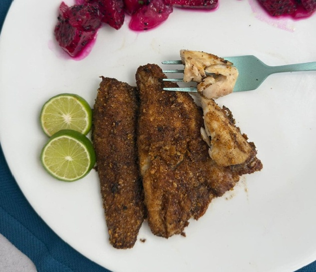
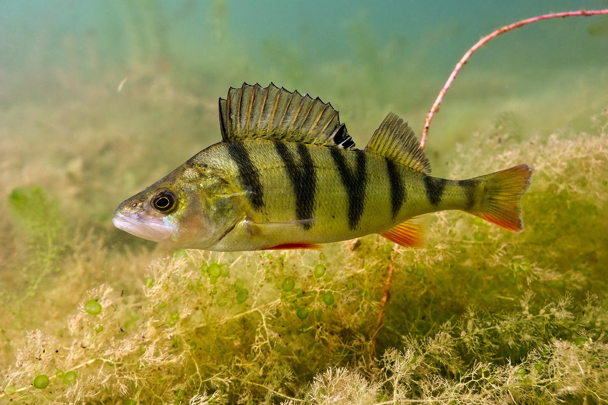

Perca flavescens
Yellow perch are the most underrated fish in Montreal. The city's canals, urban bays, and shallow lake margins hold enormous populations of perch that almost nobody targets seriously. They're available twelve months a year, including through the ice in winter, they fight well on ultralight gear, and they're arguably the best-tasting freshwater fish in Quebec. If you want to get kids or beginners into fishing, a dock or shoreline holding perch is your best starting point.
Species Overview
| Average Size (Montreal) | 20–35 cm, 100–500 g |
| Trophy Size | 38+ cm, 800 g+ |
| Habitat | Urban canals, shallow bays, weed edges, docks |
| Peak Season | Year-round, excellent open water spring & fall, great through the ice |
| Best Baits | Small jigs, live worms, minnows, maggots, tiny soft plastics |
| Top Local Spots | Canal de Lachine, Lac Saint-Louis bays, Mille-Îles backwaters |
| Regulations | 50-fish possession limit in many zones; verify MFFP annually |
Habitat & Behaviour
Yellow perch are schooling fish. Where you find one, you'll find dozens, often hundreds. They roam in large schools that relate to structure: submerged weed edges, dock pilings, sunken debris, rocky points, and drop-offs at 8 to 20 feet. In the heat of summer, schools push deeper to find cooler, more oxygenated water. In spring and fall, they're active in very shallow water, two to eight feet, and can be seen chasing minnows along dock edges in early morning.
Perch are visual daytime feeders. They don't bite well after dark, and their best feeding windows are mid-morning and late afternoon. Unlike walleye, they're not tied to low-light conditions, which makes them easier to target at convenient times. On overcast days the bite often runs all day without interruption.
Seasonal Breakdown
Spring (April – May)
Perch are among the first fish to become active in spring. As ice melts, large schools move into shallow bays and marsh areas to spawn over submerged vegetation and woody debris. Spawning perch are easy to locate, look for them in two to four feet of water near any submerged structure. Post-spawn fish disperse into the nearest available weed edges and dock structure and feed aggressively for several weeks. Small jigs tipped with a piece of worm or a live minnow fished just off the bottom produce consistently.
Summer (June – August)
Summer perch go deep during the warmest weeks, look for them at 15 to 28 feet along weed line edges, over sandy flats, and near any cool water source. Canal de Lachine holds perch in the shade of its stone walls and bridge structures throughout the summer and remains one of the most accessible spots in the city. Small jig heads (1/32 to 1/16 oz) tipped with a tiny paddle-tail or maggot, worked just above the bottom, are the most consistent mid-summer technique.
Fall (September – November)
Fall is when perch fishing peaks. Cooling water triggers massive feeding binges as fish pack on weight before winter. Schools condense and can be found at intermediate depths, 10 to 18 feet, over sand and gravel with nearby vegetation. Drop a small jig into a school and you can expect steady action for hours. The fish are noticeably larger in fall, a good day can produce perch over 30 cm on almost every cast.
Ice Fishing (December – March)
Yellow perch are the premier ice fishing target in the Montreal area. Schools suspend over soft-bottom flats and deep weed lines at 15 to 35 feet throughout the ice season. A small tungsten jig tipped with a wax worm, maggot, or tiny minnow head fished on 2 to 4 lb monofilament produces constant action on productive days. Use a sonar unit to locate the school depth and keep your bait right at their level. Perch can be height-specific, a school sitting at 22 feet may ignore a jig at 20 feet but crush it the moment it enters their zone.

Top Presentations
Small Jig + Worm Piece
A 1/16 to 1/8 oz ball-head or teardrop jig in white, chartreuse, or pink tipped with a half-inch piece of nightcrawler is the all-time most reliable perch presentation. Fish it on a light spinning rod with 4 lb mono or fluorocarbon. Lift, pause, and drop repeatedly until you find the depth where the fish are holding. Most bites come on the pause.
Live Minnow Under a Float
A small minnow (1 to 2 inches) hooked through the back under a fixed or slip bobber is an excellent perch setup from shore or a dock. Set the float to keep the minnow 12 inches off the bottom and let it swim naturally. This is ideal for kids and beginners, the bobber provides a visual bite indicator that makes the experience intuitive and exciting.
Small Soft Plastics
1 to 2-inch paddle-tail soft plastics in white or chartreuse on a 1/32 oz jig head mimic the small minnows that perch feed on throughout the season. Work them with a very slow, steady retrieve or a subtle lift-drop near the bottom. In cold water, slow down until you're barely moving the bait.
"Perch don't get enough credit. A school of 30-centimetre perch on ultralight gear is as fun as anything in freshwater, and they'll be in the pan within the hour."
Gear Setup
Ultralight is the word for perch. A 5.5 to 6.5-foot ultralight spinning rod paired with a 1000 to 2000 size reel spooled with 4 to 6 lb monofilament or 6 lb braid with a 4 lb fluorocarbon leader is the ideal perch setup. Light line lets small jigs sink and move naturally, and it transforms a 25 cm perch into a genuinely satisfying fight.
For ice fishing, use a dedicated ice rod, 24 to 28 inches, with a small spring-bobber tip for bite detection, paired with 2 to 4 lb monofilament and a tiny tungsten jig. Tungsten sinks faster than lead and has a smaller profile at equivalent weight, which is an advantage when targeting perch in cold clear water.
Eating Quality
Yellow perch rank among the finest table fish in freshwater. The white, flaky, sweet meat is outstanding pan-fried in butter and is the basis of the classic shore lunch. Perch fillets are small but the flavour-to-effort ratio is among the highest of any species. See our crispy pan-fried perch recipe for a simple preparation that does justice to the fish.

20+ years fishing Quebec's freshwater systems. Kayak angler, catch-and-release advocate, and founder of Sub Urban Anglers.
Read More About Me